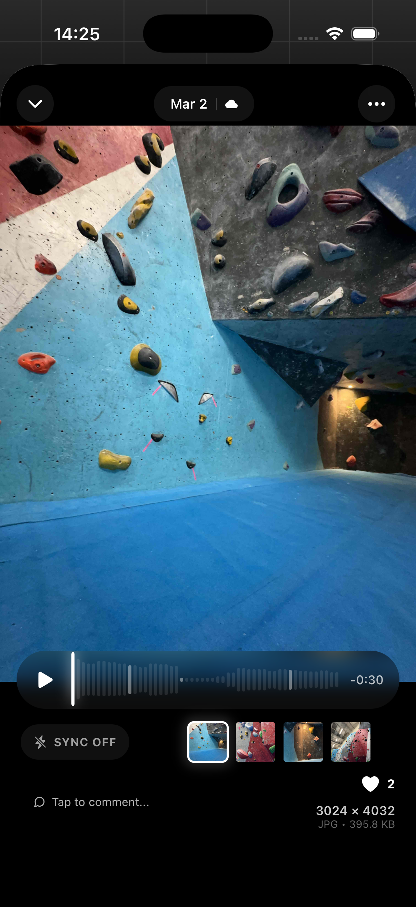
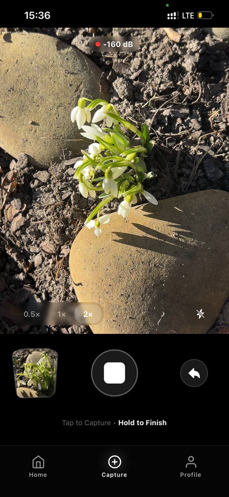

Now recording reality
Capture moments as they feel, not just how they look.
The first social camera built for raw reality. Every photo captures the ambient audio of the moment. No AI generation. No fake pixels. Just Fragment of your memories.

